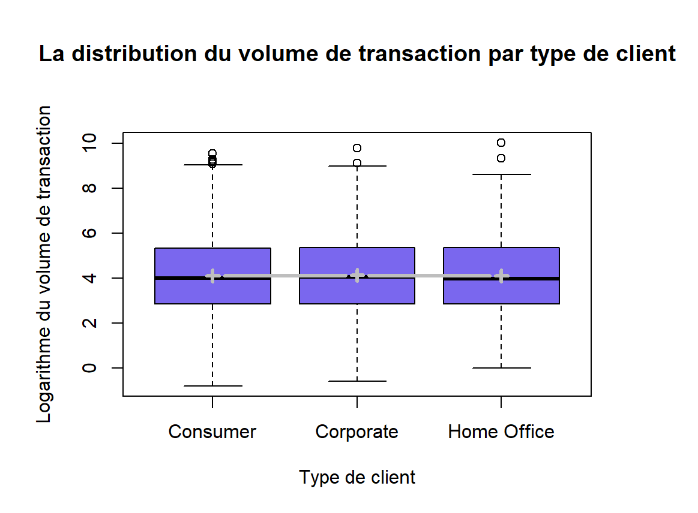

Carnet de commandes Superstore

Contexte
Analyse exploratoire du carnet de commandes de Superstore, une entreprise de vente par correspondance de mobilier, fournitures de bureau et produits technologiques, à partir des données de ventes de 2019 à 2022. L’objectif était d’identifier les segments de clientèle, produits et zones géographiques les plus performants.
Méthode
Réalisation d’une analyse descriptive et statistique sous R, à travers des visualisations, des distributions et l’étude des relations entre les variables : chiffre d’affaires, profit, type de client, catégorie de produit et localisation.
Résultats
L’analyse montre que le segment Consumer représente le principal volume de transactions et que la catégorie Technology génère le chiffre d’affaires le plus élevé. Certaines sous-catégories, comme Copiers, sont particulièrement rentables, tandis que Tables et Supplies présentent davantage de transactions déficitaires. Les performances varient également selon les États.